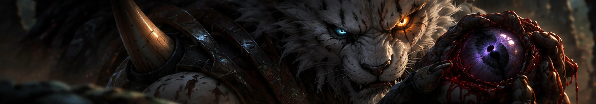
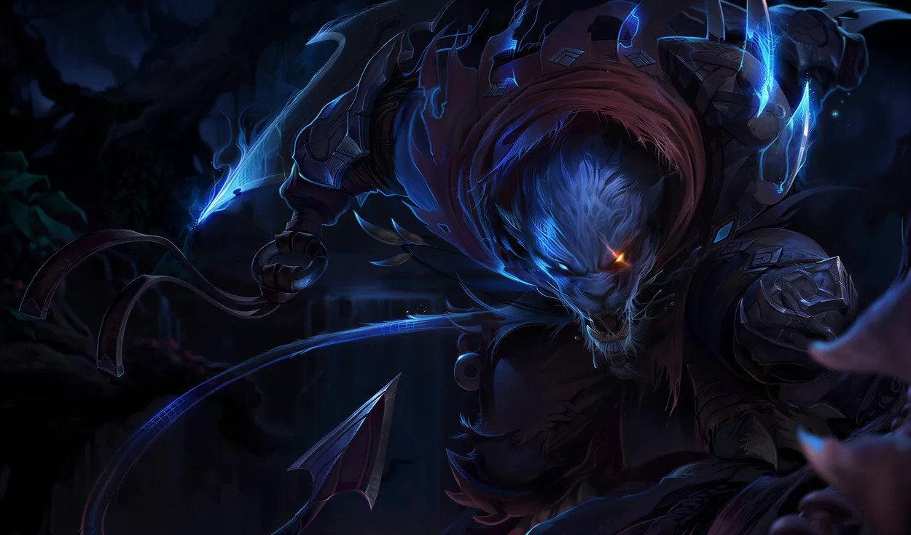

Rengar
the Pridestalker
Rengar is a ferocious vastayan trophy hunter who lives for the thrill of tracking down and killing dangerous creatures. He scours the world for the most fearsome beasts he can find, especially seeking any trace of Kha’Zix, the void creature who scratched out his eye. Rengar stalks his prey neither for food nor glory, but for the sheer beauty of the pursuit.
The hunter
Every scar
is a receipt
Retold from Riot's published biography. Riot have also written a short story about one of these hunts, Prey — a hunter with no fear against a thing that eats it. The client links to none of this from the champion page.

Ferocity
Every fourth cast
Four abilities fill the bar. The fourth one spends it, and it is a different ability entirely.
3 of 4 — one cast from empowered
No footage published for this ability.
Passive
Unseen Predator
| Cooldown | |
|---|---|
| Range | |
| Ferocity | |
| Damage |
The record
One stat
refuses to grow
Drag the level. Everything climbs except the one number that is supposed to.
Attack damage per level is zero in Riot's published data. Rengar is the rare champion whose damage growth is not a curve on a spreadsheet — it is on the necklace, and it only moves when he kills someone. A champion page that prints a flat stat table hides the single most characteristic thing about him. This one puts it on a slider so you watch it stay still.
- Health
- 590+104
- Attack damage
- 68+0
- Attack speed
- 0.667+3%
- Armour
- 34+4.2
- Magic resist
- 32+2.05
- Health regen
- 6.0+0.5
- Move speed
- 345
- Attack range
- 125
Trophies
Ten skins,
one at a time
The splash is what the store sells you. The model underneath is what you actually get.

Rengar
In-game model
The mesh the game draws, not the painting. Drag to turn it. Game camera drops to roughly the pitch the client renders at, which is where you find out how much of a skin you ever really see.
Loading the model...
The rival
The one that
got away
- Status
- Unfinished
- Cost so far
- One eye
Rengar and Kha’Zix share a legendary rivalry as two of the most dangerous hunters in Runeterra. They first fought in a brutal, night-long battle that ended in a bloody stalemate and cost Rengar his left eye. Now, both predators hunt each other continuously, each driven by the desire to kill and claim the ultimate trophy from the only opponent worthy of their skills.